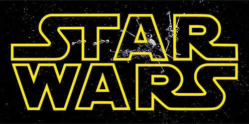

StarWars Tematica Personagens Ambientação Impacto Cultural StarWars Tematica Personagens Ambientação Impacto Cultural
StarWars Tematica Personagens Ambientação Impacto Cultural StarWars Tematica Personagens Ambientação Impacto Cultural 
Star Wars é o título de uma franquia estadunidense criada pelo cineasta George Lucas. A franquia conta com uma série de sete filmes de fantasia científica e um spin-off. O primeiro filme da série foi lançado apenas com o título Star Wars em 25 de maio de 1977, e se tornou um sucesso inesperado e fenômeno mundial de cultura popular. Star Wars foi responsável pelo inicio da "era dos blockbusters": Super produções cinematográficas que fazem sucesso nas bilheterias e viram franquias com brinquedos, jogos, livros etc. Foi seguido por duas sequências, O Império Contra-Ataca e O Retorno do Jedi, lançadas em intervalos de três anos. Esta primeira trilogia seguia o trio hoje icônico: Luke Skywalker, Princesa Leia e Han Solo. O trio lutava na Aliança Rebelde para derrubar o tirano Império Galáctico; paralelamente ocorre a jornada de Luke para se tornar um cavaleiro Jedi e derrotar tanto Darth Vader, um ex-jedi que sucumbiu ao Lado Sombrio da Força e o Imperador.
A série teve início com o simples título Star Wars, criado e dirigido por George Lucas, lançado em 25 de maio de 1977. Na época da sua estreia foi a maior bilheteria de todos os tempos, arrecadando US$ 775.398.007 milhões de dólares e ganhando sete prêmios no Oscar.
A Fox desacreditou num filme que falava sobre o espaço - na época uma loucura -, permitiu que George Lucas tivesse todos os direitos do filme. Devido o sucesso garantiu a ele dinheiro suficiente para abrir sua empresa cinematográfica: Lucasfilm. O sucesso foi tão grande, que o filme foi transformado em uma franquia e ganhou produtos derivados. Em 1978, Star Wars teve um especial de Natal pra TV, o The Star Wars Holiday Special exibido pela CBS, sendo notório por ter uma grande recepção negativa e nunca ter sido exibido novamente na televisão ou lançado em DVD. George Lucas não teve envolvimento significativo na produção e demonstrou decepção com o resultado final.
Seguido pelo fiasco natalino, vieram sequências de sucesso nos cinemas: O Império Contra-Ataca lançado em 21 de maio de 1980, considerado pela crítica e público o melhor filme da série, pelo seu equilíbrio entre momentos sombrios e dramáticos. A trilogia foi fechada pelo O Retorno de Jedi lançado em 25 de maio de 1983, que apesar do sucesso comercial recebeu críticas pelo seu tom leve. Após o lançamento de O Império Contra-Ataca, Star Wars (1977) ganhou o subtitulo "Episódio IV: Uma Nova Esperança". Isto ocorreu porque na época George Lucas tinha anunciado a "trilogia de prequela", lançada no final dos anos 90, e a trilogia original seria os capítulos 4, 5 e 6 da saga.